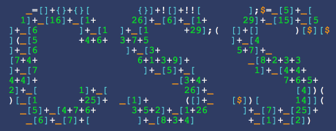

- 
I'm Tom, and I'm a developer, and student at the University of Birmingham. I am currently studying towards an MSci Computer Science with Industrial Year Degree, and have just completed my first year with a first-class degree.
I have experience with Python, Java, JavaScript and OCaml, and I especially enjoy working on front-end development with HTML, CSS and JavaScript.
As well as this, I'm also a keen musician - Predominantly a pianist and singer, although I have also dabbled in guitar and flute.
I am currently the president of the Computer Science Society (CSS) at the University of Birmingham. As well as this, I am a Silicon Canal ambassador, and I want to see Birmingham's tech scene become tighter-knit and less fragmented.
I'm a big fan of coffee (I'm a developer and a student... what did you expect?) - and if you fancy grabbing a coffee (or similar) in B'ham and chatting about tech etc. please get in touch!